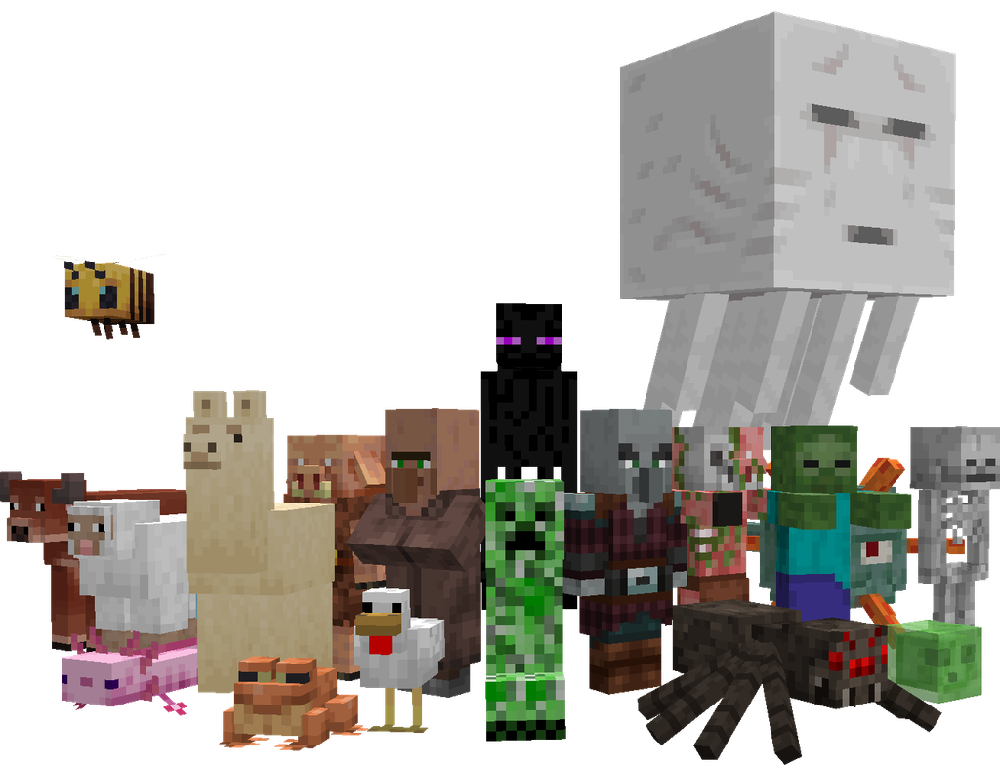
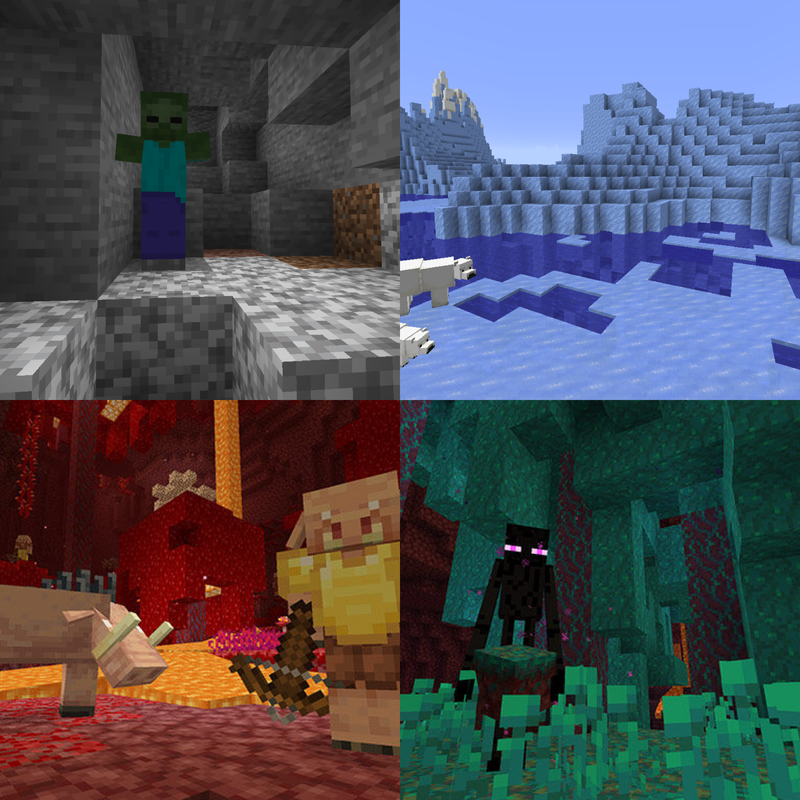
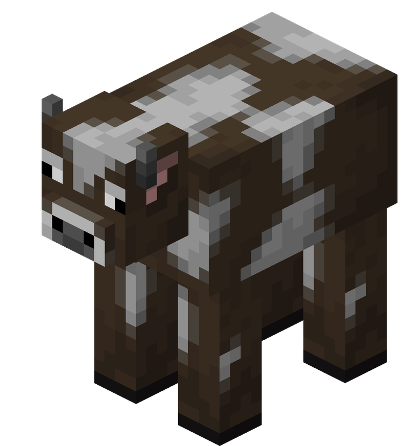
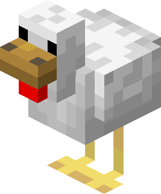
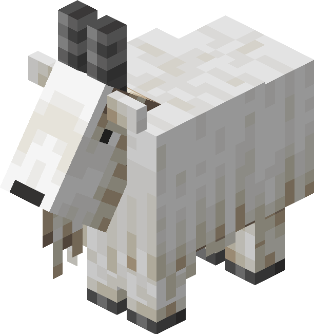
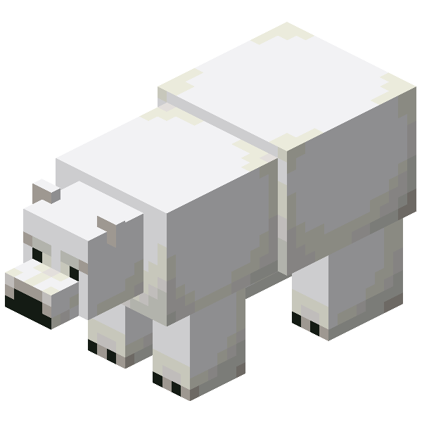

Criaturas
 |
|---|
As criaturas, também conhecidas pelo termo inglês mobs, são entidades vivas capazes de se
movimentar e
interagir com o ambiente de diferentes maneiras.
O termo mob vem de mobile, ou seja, “móvel” ou “aquilo
que se move”.
Elas representam uma das partes mais importantes da vida no mundo de Minecraft. Animais podem fornecer
alimento e recursos, criaturas hostis representam
ameaças constantes e algumas espécies possuem
comportamentos, habilidades e itens exclusivos que podem ser essenciais para a sobrevivência e progressão
do jogador.
Cada criatura possui seu próprio conjunto de características, incluindo quantidade de vida, comportamento,
inteligência artificial, condições de geração e
possíveis itens deixados após a morte.
Geração de criaturas
As criaturas podem surgir no mundo de diversas maneiras. A maior parte delas aparece naturalmente de acordo com determinadas condições do ambiente, como:
- Nível de iluminação;
- Bioma;
- Tipo de bloco;
- Espaço disponível;
- Dimensão;
- Proximidade do jogador;
- Horário do dia.

Animais normalmente são encontrados em regiões abertas e bem iluminadas da superfície, enquanto criaturas
hostis aparecem principalmente em locais escuros,
como cavernas, masmorras e outras estruturas
subterrâneas.
Durante a noite, muitas dessas criaturas também passam a surgir na superfície.
Por isso, iluminação é uma das ferramentas mais importantes para tornar uma região segura. Manter
casas,
fazendas, minas e arredores devidamente iluminados
reduz consideravelmente a presença de monstros.
Animais costumam permanecer no mundo por períodos muito maiores, enquanto diversos monstros hostis surgem e
desaparecem de acordo com a distância em
relação ao jogador.
Reprodução
Algumas criaturas passivas e neutras podem ser reproduzidas pelo próprio jogador. Ao oferecer o alimento
adequado para dois animais compatíveis, eles entram
em estado de reprodução e geram um filhote. Essa
mecânica permite criar fazendas de animais para obtenção constante de alimentos e outros recursos. Até mesmo
algumas criaturas perigosas possuem sistemas semelhantes. Os hoglins, por exemplo, podem ser reproduzidos
mesmo sendo criaturas naturalmente hostis.
Aldeões também podem gerar novos aldeões, embora o sistema funcione de maneira diferente. Sua reprodução
depende principalmente da disponibilidade de camas
e de condições adequadas dentro da vila.
Comportamento das criaturas
Cada espécie utiliza um sistema próprio de inteligência artificial.
Esses sistemas determinam como a criatura:
- Se movimenta;
- Identifica ameaças;
- Procura caminhos;
- Persegue alvos;
- Foge;
- Ataca;
- Interage com outras criaturas.
Quando não possuem um objetivo específico, muitas criaturas simplesmente caminham aleatoriamente pela região.
Elas também costumam evitar quedas que poderiam
causar dano, embora acidentes ainda possam acontecer.
Muitas espécies possuem sistemas avançados de localização de caminhos, permitindo contornar obstáculos para
alcançar jogadores, alimentos ou outros objetivos.
Categorias especiais
Algumas criaturas pertencem a categorias específicas que alteram sua interação com encantamentos, efeitos ou
outras criaturas.
Entre os principais grupos estão
os mortos-vivos, criaturas aquáticas, artrópodes
e illagers.
Lista de criaturas
Criaturas passivas
As criaturas passivas são criaturas inofensivas (exceto o baiacu) e pacíficas que não atacam o jogador,
mesmo quando provocados, e geralmente fogem se forem provocados.
Muitos deles são aptos para a
reprodução e podem ser criaturas domesticáveis.
 |
 |
 |
 |
|---|---|---|---|
|
|
|
|
|
Criaturas neutras
As criaturas neutras às vezes são passivas e às vezes hostis ao jogador. Muitas criaturas neutras se
tornam hostis apenas quando atacados primeiro, mas outras criaturas neutras
têm outras maneiras de serem
provocadas. Alguns podem ser naturalmente hostis à provocação.
 |
 |
 |
|---|---|---|
|
|
|
|